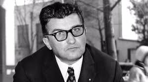
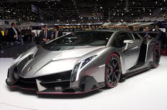
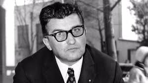
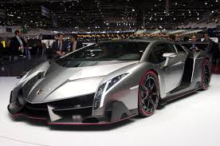

Automobili Lamborghini S.p.A. es una legendaria marca italiana de automóviles de lujo y superdeportivos, fundada en 1963 por Ferruccio Lamborghini. Su sede se encuentra en Sant'Agata Bolognese, cerca de Bolonia, y desde el principio ha sido reconocida por su innovación en diseño y rendimiento. Ferruccio, un exitoso fabricante de tractores, decidió aventurarse en el mundo de los autos deportivos tras una famosa disputa con Enzo Ferrari, lo que lo llevó a querer crear un vehículo que combinara potencia con confort.
El primer modelo de Lamborghini, el 350 GT, fue presentado en 1964, y poco después, lanzaron el Miura, que cambió la industria al ser uno de los primeros autos en presentar un motor central trasero, una característica ahora común en superdeportivos. Lamborghini continuó evolucionando con modelos icónicos como el Countach, que estableció el diseño angular y futurista que la marca mantiene hasta hoy.
 



Las características puertas de apertura vertical, vistas por primera vez en el Countach, se han convertido en un símbolo distintivo de Lamborghini. La empresa ha sido pionera en el uso de materiales ligeros como la fibra de carbono para mejorar la eficiencia y el rendimiento de sus vehículos.
En 1998, Lamborghini fue adquirida por Audi, una subsidiaria del Grupo Volkswagen, lo que permitió a la marca crecer con recursos adicionales y mantenerse a la vanguardia de la tecnología automotriz. Con modelos como el Aventador y el Huracán, Lamborghini sigue siendo un referente en el mercado de los superdeportivos, ofreciendo vehículos que combinan ingeniería avanzada, diseño agresivo y un enfoque en la experiencia del conductor.